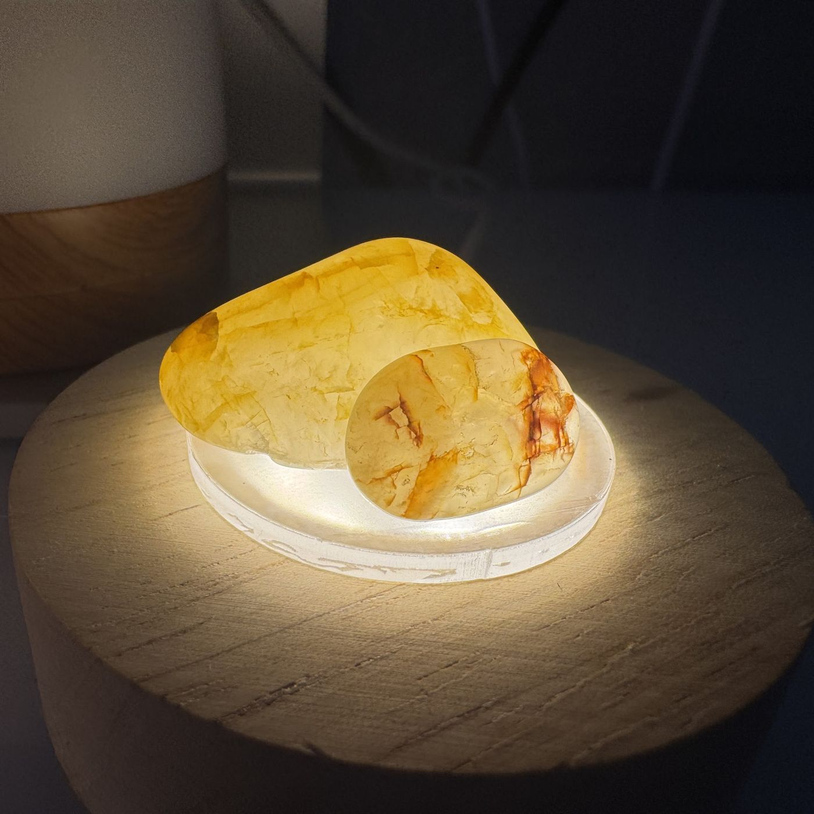
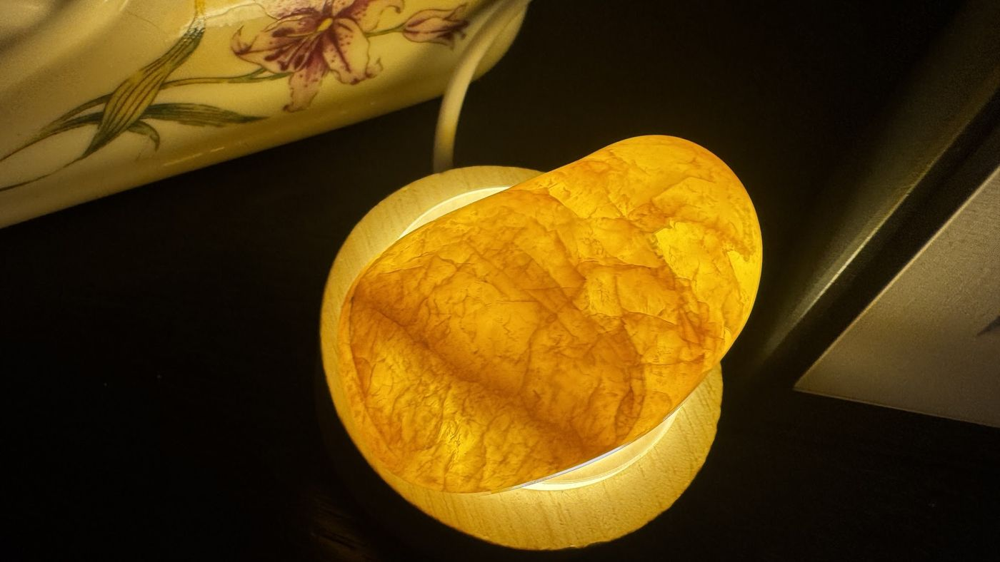
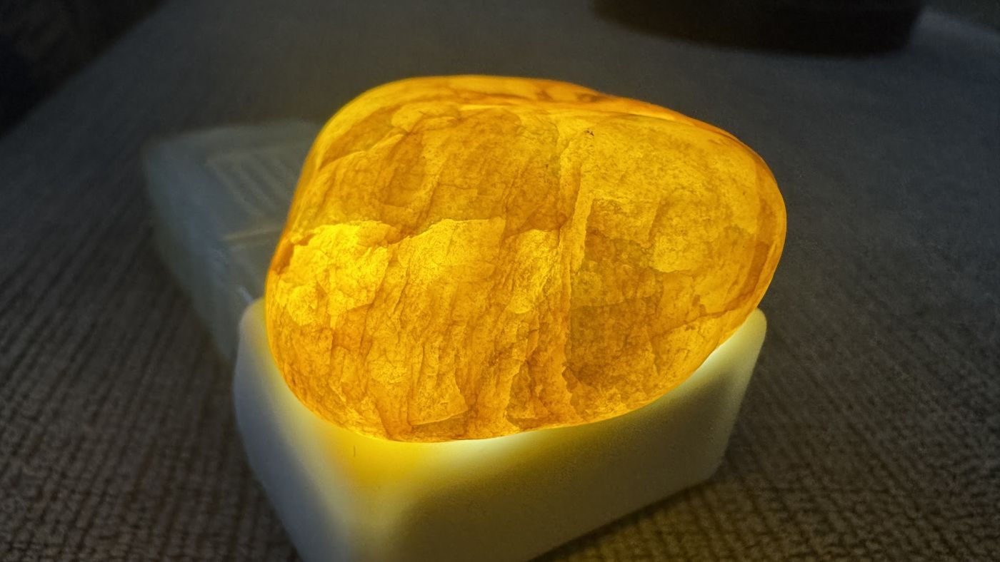
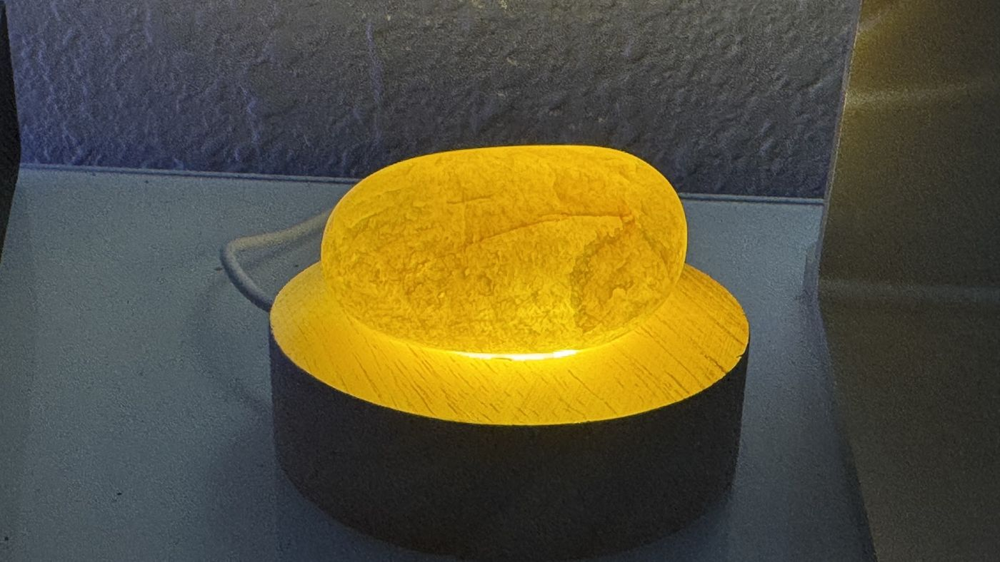
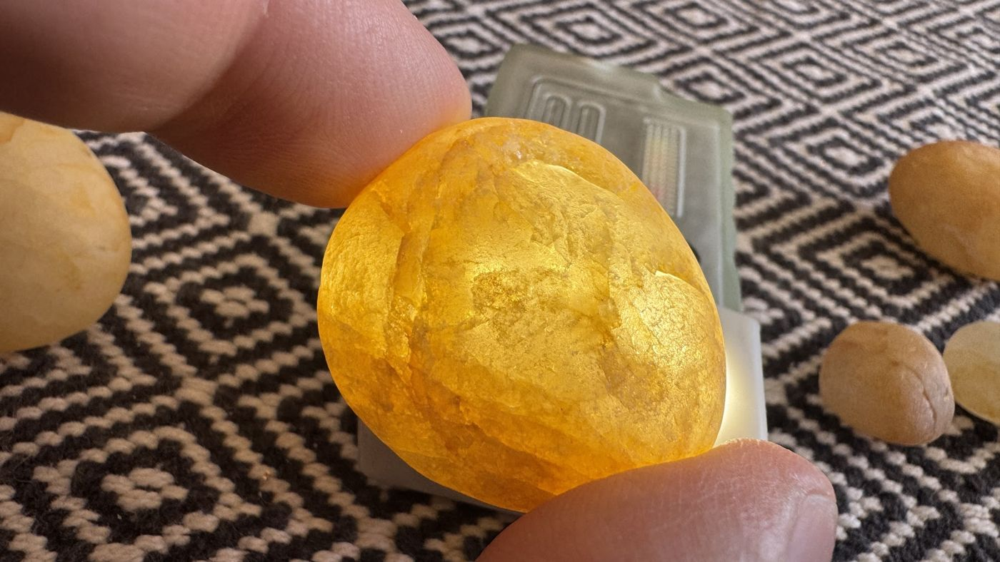
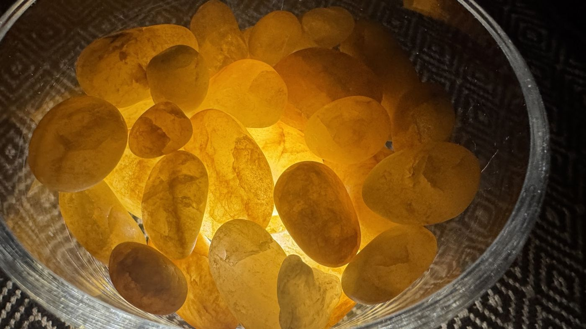
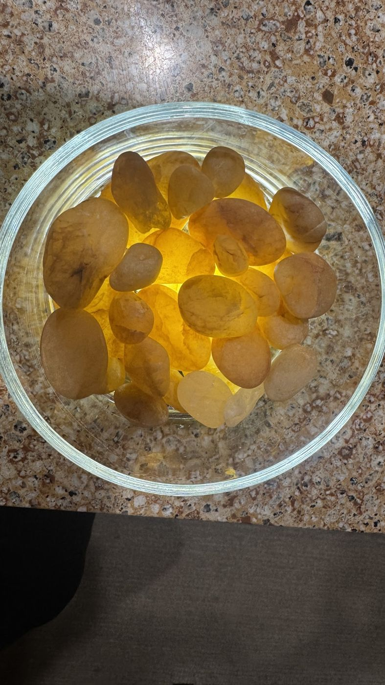
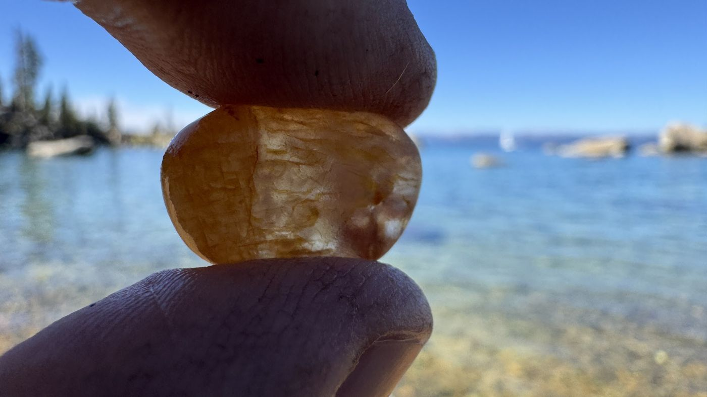
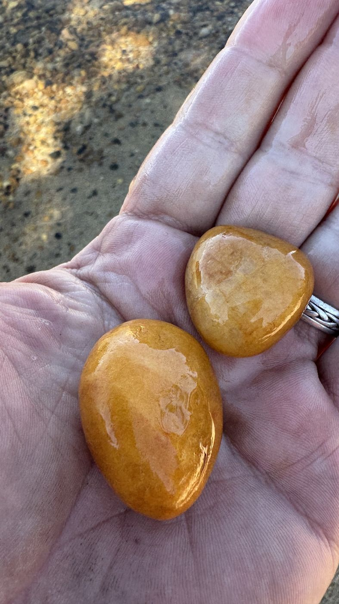

Daydreams · Real and imagined
Carnelian Concepts
Two halves. The real stones, found a little at a time and lit from below, and the AI daydreams they set off: fire armor, glowing kitchens, carnelian headphones.
Real Photographs





















Imagined Made with AI


Made with AI: Google Flow, OpenArt, Veo and Seedance, depending on the piece.